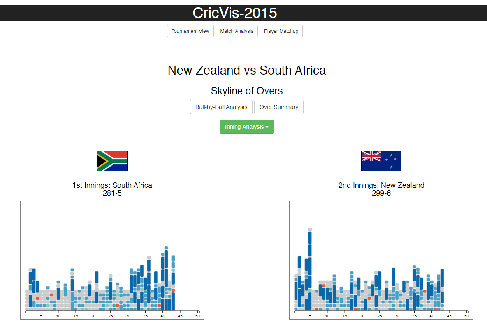
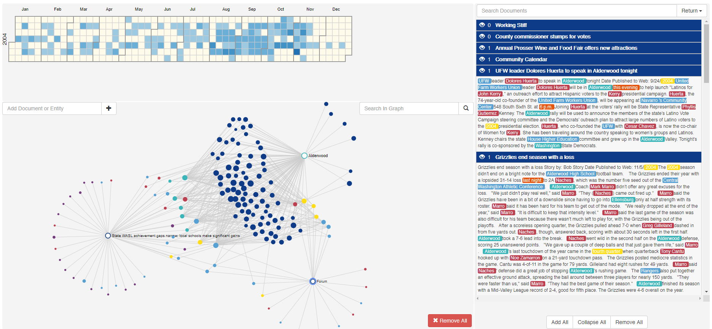

Other Projects

|
VisWall: Visual Data Exploration using Direct Combination on Large Touch DisplaysMallika Agarwal, Arjun Srinivasan, and John Stasko An increasing number of data visualization tools are being designed for touch-based devices ranging from smartwatches to large wallsized displays. While most of these tools have focused on exploring novel techniques to manually specify visualizations, recent touchbased visualization systems have begun to explore interface and interaction techniques for attribute-based visualization recommendations as a way to aid users (particularly novices) during data exploration. Advancing this line of work, we present a visualization system, VisWall, that enables visual data exploration in both single user and co-located collaborative settings on large touch displays. Coupling the concepts of direct combination and derivable visualizations, VisWall enables rapid construction of multivariate visualizations using attributes of previously created visualizations. By blending visualization recommendations and naturalistic interactions, VisWall seeks to help users visually explore their data by allowing them to focus more on aspects of the data (particularly, data attributes) rather than specifying and reconfiguring visualizations. We discuss the design, interaction techniques, and operations employed by VisWall along with a scenario of how these can be used to facilitate various tasks during visual data exploration. Related Materials |

|
Tangraphe: Interactive Exploration of Network Visualizations using Single Hand, Multi-touch GesturesJohn Thompson, Arjun Srinivasan, and John Stasko Touch-based displays are becoming a popular medium for interacting with visualizations. Network visualizations are a frequently used class of visualizations across domains to explore entities and relationships between them. However, little work has been done in exploring the design of network visualizations and corresponding interactive tasks such as selection, browsing, and navigation on touch-based displays. Network visualizations on touch-based displays are usually implemented by porting the conventional pointer based interactions as-is to a touch environment and replacing the mouse cursor with a finger. However, this approach does not fully utilize the potential of naturalistic multi-touch gestures afforded by touch displays. We present a set of single hand, multi-touch gestures for interactive exploration of network visualizations and employ these in a prototype system, Tangraphe. We discuss the proposed interactions and how they facilitate a variety of commonly performed network visualization tasks including selection, navigation, adjacency-based exploration, and layout modification. We also discuss advantages of and potential extensions to the proposed set of one-handed interactions including leveraging the non-dominant hand for enhanced interaction, incorporation of additional input modalities, and integration with other devices. Related Materials |
|  |
CricVis: Interactive Visual Exploration and Analysis of Cricket MatchesAyan Das, Arjun Srinivasan, and John Stasko CricVis is a web-based system that visualizes cricket matches ball-by-ball. With six coordinated views and brushingand-linking capabilities, CricVis allows users to gain both quick overviews and detailed insights about match events, team performances, and individual player patterns in cricket matches. Related Materials |
|  |
PUNGA: Visual Analytics Tool for Exploring Document CollectionsJohn Thompson, Arjun Srinivasan, Brad Thwaites, and Alex Endert PUNGA is a visual analytics tool for intelligence analysts. PUNGA assists analysts in making sense of a large textual-based dataset by supporting data processing (Named Entity Recognition), data cleaning, data analysis, and analytic provencance. PUNGA provides users the ability to combine, format, clean the data as per their convenience before and during analysis with the Entity View. PUNGA also facilitates user interaction with the data sets in a number of linked views. These visualizations include the Document Viewer, the Node Graph View, and the Calendar View. Finally, PUNGA provides a Provenance View that displays quantitative values that summarize the analysis session and more importantly help in analytic provenance. Related Materials |